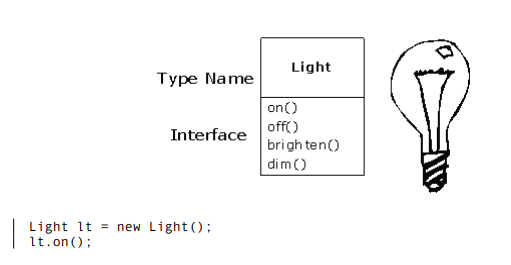

Aristotle was probably the first to begin a careful study of the concept of type; he spoke of
“the class of fishes and the class of birds.” The idea that all objects, while being unique, are
also part of a class of objects that have characteristics and behaviors in common was used
directly in the first object-oriented language, Simula-67, with its fundamental keyword class
that introduces a new type into a program.
Simula, as its name implies, was created for developing simulations such as the classic “bank
teller problem.” In this, you have numerous tellers, customers, accounts, transactions, and
units of money—a lot of “objects.” Objects that are identical except for their state during a
program’s execution are grouped together into “classes of objects,” and that’s where the
keyword class came from. Creating abstract data types (classes) is a fundamental concept in
object-oriented programming. Abstract data types work almost exactly like built-in types:
You can create variables of a type (called objects or instances in object-oriented parlance)
and manipulate those variables (called sending messages or requests; you send a message
and the object figures out what to do with it). The members (elements) of each class share
some commonality: Every account has a balance, every teller can accept a deposit, etc. At the
same time, each member has its own state: Each account has a different balance, each teller
has a name. Thus, the tellers, customers, accounts, transactions, etc., can each be
represented with a unique entity in the computer program. This entity is the object, and each
object belongs to a particular class that defines its characteristics and behaviors.
So, although what we really do in object-oriented programming is create new data types,
virtually all object-oriented programming languages use the “class” keyword. When you see
the word “type” think “class” and vice versa.
Since a class describes a set of objects that have identical characteristics (data elements) and
behaviors (functionality), a class is really a data type because a floating point number, for
example, also has a set of characteristics and behaviors. The difference is that a programmer
defines a class to fit a problem rather than being forced to use an existing data type that was
designed to represent a unit of storage in a machine. You extend the programming language
by adding new data types specific to your needs. The programming system welcomes the new
classes and gives them all the care and type checking that it gives to built-in types.
The object-oriented approach is not limited to building simulations. Whether or not you
agree that any program is a simulation of the system you’re designing, the use of OOP
techniques can easily reduce a large set of problems to a simple solution.
Once a class is established, you can make as many objects of that class as you like, and then
manipulate those objects as if they are the elements that exist in the problem you are trying
to solve. Indeed, one of the challenges of object-oriented programming is to create a one-toone
mapping between the elements in the problem space and objects in the solution space.
But how do you get an object to do useful work for you? There needs to be a way to make a
request of the object so that it will do something, such as complete a transaction, draw
something on the screen, or turn on a switch. And each object can satisfy only certain
requests. The requests you can make of an object are defined by its interface, and the type is
what determines the interface. A simple example might be a representation of a light bulb:

The interface determines the requests that you can make for a particular object. However,
there must be code somewhere to satisfy that request. This, along with the hidden data,
comprises the implementation. From a procedural programming standpoint, it’s not that
complicated. A type has a method associated with each possible request, and when you make
a particular request to an object, that method is called. This process is usually summarized by
saying that you “send a message” (make a request) to an object, and the object figures out
what to do with that message (it executes code).
Here, the name of the type/class is Light, the name of this particular Light object is lt, and
the requests that you can make of a Light object are to turn it on, turn it off, make it
brighter, or make it dimmer. You create a Light object by defining a “reference” (lt) for that
object and calling new to request a new object of that type. To send a message to the object,
you state the name of the object and connect it to the message request with a period (dot).
From the standpoint of the user of a predefined class, that’s pretty much all there is to
programming with objects.
The preceding diagram follows the format of the Unified Modeling Language (UML). Each
class is represented by a box, with the type name in the top portion of the box, any data
members that you care to describe in the middle portion of the box, and the methods (the
functions that belong to this object, which receive any messages you send to that object) in
the bottom portion of the box. Often, only the name of the class and the public methods are
shown in UML design diagrams, so the middle portion is not shown, as in this case. If you’re
interested only in the class name, then the bottom portion doesn’t need to be shown, either.